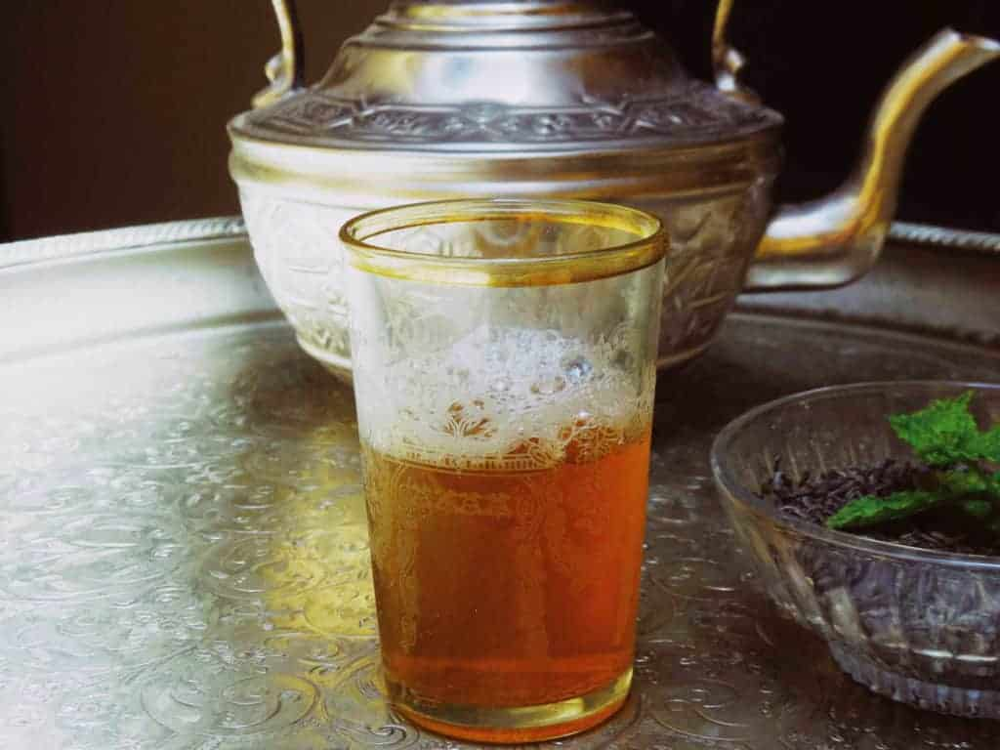

Moroccan mint tea

The image above shows a hot moroccan mint tea cup ready for sipping.
In my country Morocco, tea is one of the required drunk at every Moroccan family table
especially at ceremonies and celebrities.
Ingredients:
-
4 branches Fresh Mint.
-
2 tbsp White sugar adjust to taste and diet.
-
3 cups Water.
1 tbsp of EL NASS tea.
Steps and Instructions:
- Put the green tea leaves in your teapot.
- Boil water in a separate kettle.
- Once water is boiling, pour 1 cup of water in your teapot and swish it around a few times
to clean the tea leaves. This helps get rid of tea's strong and sour flavors.
- Pour that water in the sink through the teapot spout.
- Now that your tea leaves are clean and the flavors milder, pour the remaining boiling water in the teapot.
Don't fill the teapot to the brim keeping one inch space. Add the sugar.
- Position the teapot on the stove. Turn the heat to medium and let boil for 1 to 3 minutes depending on how strong you like your tea.
Also, the more you boil your tea the more caffeine content you will get.
- Add mint (fresh or dried) and make sure it is all covered with water, otherwise, it may leave your tea with a bitter taste.
If you are using fresh mint branches and they don't fit in the teapot, you can bend them.
- Let everything boil for another 1 to 2 minutes, until liquid starts foaming slightly.
- Turn the heat off.
Be careful as your teapot can get extremely hot, so make sure you wrap the handle with a cotton cloth.
- Serve hot with some cookies, pastries or biscuits.